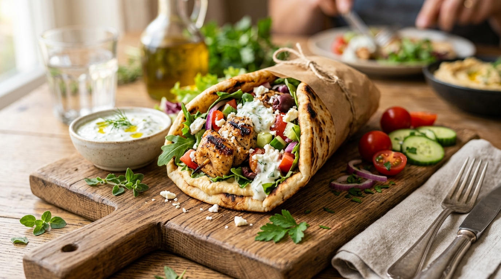
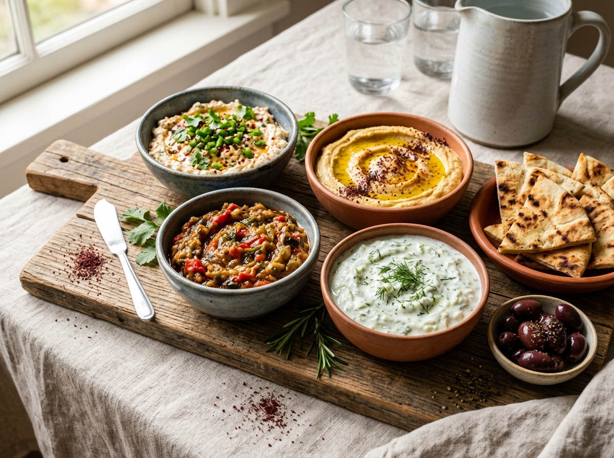
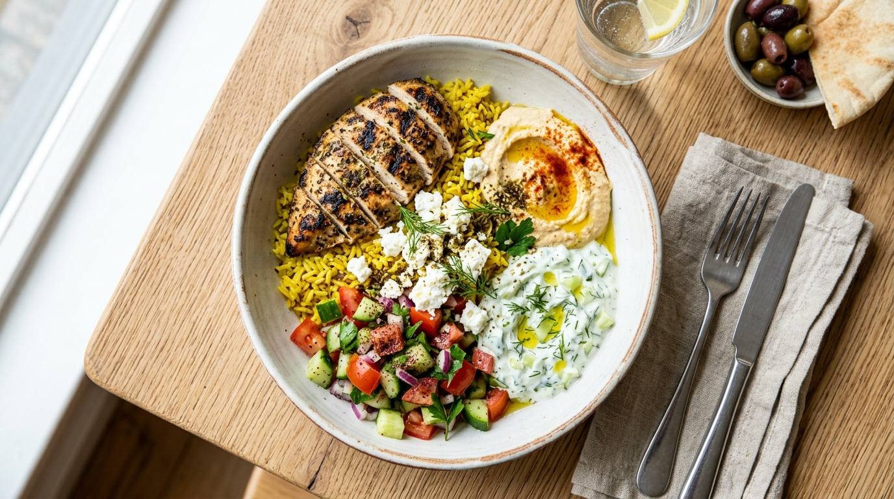

What's in a CAVA Pita? (Quick Answer)
A CAVA pita is a warm, sprouted grain flatbread filled with one protein, up to three free dips, free toppings, and one dressing. The bread is made exclusively for CAVA by Damascus Bakery, a Brooklyn bakery operating since 1933. It contains wheat, sesame, and soy, so it is not a fit for anyone avoiding gluten.
Did you know? Some guests call it a wrap rather than a pita, since it is rolled and eaten by hand. The name does not change what is inside. The distinction only matters if you are searching menu trackers or nutrition tools that list it under a different label.

CAVA Pita Menu at a Glance (Quick Facts)
CAVA Build-Your-Own Pita — Full Guide
The CAVA build your own pita option is the single most searched item on the entire pita menu, and it earns that attention. It follows the same five-step counter system used for bowls: pick a protein, add dips, add toppings, and finish with a dressing, all inside the pita instead of a bowl.
How to Build Your Own CAVA Pita (Step-by-Step)
- 1. Base: Choose pita as your base instead of greens or grains.
- 2. Protein: Pick one protein.
- 3. Dips: Add up to three dips or spreads, included free.
- 4. Toppings: Add toppings, also included free.
- 5. Dressing: Finish with one dressing, added inside before the wrap is folded.
This order matters more than it looks. Dips and dressing added before folding coat the inside of the bread, so the wrap holds together instead of leaking once you start eating.


Best Proteins for a CAVA Pita
Every CAVA protein works in a pita, but they do not all perform the same way once wrapped. Grilled chicken is the safest, most versatile choice and pairs cleanly with almost any dip. Steak and spicy lamb meatballs are the two proteins that genuinely improve in pita form, since the wrap concentrates their seasoning instead of letting it spread across a bowl.
Falafel is the strongest plant-based option, and the bread keeps it crispier longer than an open bowl does. One limitation worth knowing: falafel contains wheat, so it is not a gluten-free protein choice even though it is plant-based.
Dips, Toppings & Dressings for Pitas
Inside a pita, dips work as a sauce layer rather than sitting underneath the food, so fewer dips usually work better than more. Hummus paired with one bolder dip, such as Crazy Feta® or harissa, is a reliable combination that avoids an overly wet, sliding wrap. Toppings that add texture without bulk, like pickled onions, sumac slaw, and crumbled feta, hold up best.
For dressing, lighter options such as lemon herb tahini or yogurt dill distribute evenly through the wrap. Garlic sauce is intensely flavored and works best in a smaller amount rather than a full serving, since it can overwhelm the other ingredients once folded inside.
CAVA Signature Pita — Menu, Prices & Calories
Signature pitas are pre-built combinations designed by CAVA's kitchen team, meant to be ordered as-is with minor tweaks at the counter. Prices and calories shift slightly by location, so figures below reflect typical national averages rather than a single fixed number.
CAVA Pita Bread & Chips
CAVA Pita Bread Calories & Nutrition Facts
Plain CAVA pita bread carries about 230 calories, 8g protein, 40g carbs, and 5g fat before any filling is added. It contains wheat, sesame, and soy, and it is not gluten-free. It is vegan on its own, though a full order may not be depending on the dips and toppings chosen.
What's Inside CAVA's Pita Wraps?
CAVA's pita wraps start with a blend of freshly milled flour and sprouted wheat grains. Sprouting partially breaks down starch before milling, which research on sprouted grains links to a lower glycemic impact compared to standard white flour. Damascus Bakery developed this specific recipe to hold heavy fillings without tearing or turning soggy.
CAVA Pita Chips
CAVA pita chips come in three flavors: Classic (280 cal), Cinnamon Sugar (310 cal), and Sumac Sour Cream + Onion. Price typically falls between $3.55 and $3.75.

CAVA Pita Nutrition & Allergen Guide
Allergen Guide
Pita vs Bowl vs Salad — Which Should You Order?
The honest answer depends on what matters most for that specific meal. A pita concentrates flavor and travels well, but it caps out around eight toppings and has no gluten-free version. A bowl handles heavier builds, supports full customization without a topping limit, and is the only gluten-free format among the three.
Community discussion among CAVA regulars often centers on this exact tradeoff. Skipping the rice or lentil base in a pita lets the protein and dips carry more of the flavor, but it can also make the meal messier to eat. If gluten-free eating, macro tracking, or a heavy topping load matters more than portability, the bowl or salad is the more practical choice.

CAVA Kids Pita
The kids pita is a scaled-down build-your-own wrap made for smaller appetites, using the same bread and ingredients as the adult version. It includes a mini pita, one protein at half serving, one dip, one dressing, up to three toppings, and a side of pita chips or carrot sticks, along with a small milk or juice. Price runs about $7.15 to $7.70, and calories range from roughly 505 to 1,210 depending on the choices made.
Grilled chicken and falafel are the two most requested proteins for kids' orders, largely because both are mild enough that no extra requests are needed at the counter. Parents can still ask to skip spicier dips like harissa if needed.